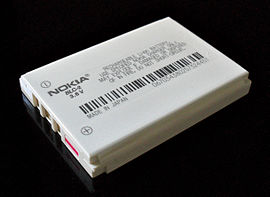
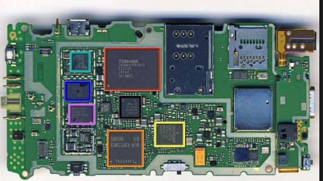
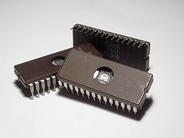
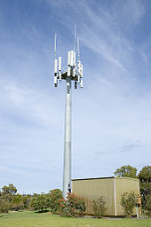
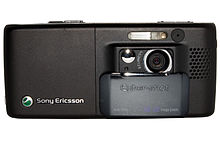

Partes del Celular
Batería

Es el elemento donde se almacena la energía eléctrica necesaria para el lograr el funcionamiento de los
circuitos del teléfono y de la pantalla. Normalmente están hechas de iones de litio.
La batería de iones de litio, también denominada batería Li-Ion, es un dispositivo diseñado para
almacenamiento de energía eléctrica que emplea como electrolito una sal de litio que consigue los iones
necesarios para la reacción electroquímica reversible que tiene lugar entre el cátodo y el ánodo.
Las propiedades de las baterías de Li-ion, como la ligereza de sus componentes, su elevada capacidad
energética y resistencia a la descarga, junto con el poco efecto memoria que sufren6 o su capacidad
para funcionar con un elevado número de ciclos de regeneración, han permitido diseñar acumuladores
ligeros, de pequeño tamaño y variadas formas, con un alto rendimiento, especialmente adaptados a las
aplicaciones de la industria electrónica de gran consumo.7 Desde la primera comercialización de un
acumulador basado en la tecnología Li-ion a principios de los años 1990, su uso se ha popularizado en
aparatos como teléfonos móviles, agendas electrónicas, ordenadores portátiles y lectores de
música.
Sin embargo, su rápida degradación y sensibilidad a las elevadas temperaturas, que pueden resultar en su
destrucción por inflamación o incluso explosión, requieren, en su configuración como producto de
consumo, la inclusión de dispositivos adicionales de seguridad, resultando en un coste superior que ha
limitado la extensión de su uso a otras aplicaciones.
A principios del siglo XXI, en el contexto de la creciente carestía de combustibles derivados del
petróleo, la industria del automóvil anunció el desarrollo, proliferación y comercialización de
vehículos con motores eléctricos basados en la tecnología de las baterías de iones de litio, con los que
se pueda disminuir la dependencia energética de estas fuentes a la vez que se mantiene baja la emisión
de gases contaminantes.
Las baterías de litio fueron propuestas por primera vez por M.S. Whittingham,8 actualmente en la
Universidad de Binghamton. Whittingham utilizó sulfuro de titanio(II)9 y metal de litio como
electrodos.
En 1985, Akira Yoshino ensambló un prototipo de batería usando material carbonoso en el que se podían
insertar los iones de litio como un electrodo y óxido de litio cobalto (LiCoO2),10 que es estable en el
aire, como el otro. Al emplear materiales sin litio metálico, se incrementó espectacularmente la
seguridad sobre las baterías que utilizaban el litio metal. El uso de óxido de litio cobalto posibilitó
que se pudiera alcanzar fácilmente la producción a escala industrial.
Este fue el nacimiento de la actual batería Li-ion.
Tablero de circuitos
Se denomina de esta forma al conjunto de la estructura interna del celular. Es el encargado de comunicar
entre sí todas las partes del aparato, permitiendo que el móvil funcione.
La placa base, también conocida como tarjeta madre, placa madre o placa principal (motherboard o
mainboard en inglés), es una tarjeta de circuito impreso a la que se conectan los componentes que
constituyen la computadora.
Es una parte fundamental para montar cualquier computadora personal de escritorio o portátil o algún
dispositivo. Tiene instalados una serie de circuitos integrados, entre los que se encuentra el circuito
integrado auxiliar (chipset), que sirve como centro de conexión entre el microprocesador (CPU), la
memoria de acceso aleatorio (RAM), las ranuras de expansión y otros dispositivos.
Va instalada dentro de una carcasa o gabinete que por lo general está hecha de chapa y tiene un panel
para conectar dispositivos externos y muchos conectores internos y zócalos para instalar componentes
internos.
La placa base, además incluye un firmware llamado BIOS, que le permite realizar las funcionalidades
básicas, como pruebas de los dispositivos, vídeo y manejo del teclado, reconocimiento de dispositivos y
carga del sistema operativo.
Circuito integrado
Es un chip o una combinación de chips que se encuentran ubicados en el tablero de circuitos. Son
circuitos que están en miniatura y que forman parte de un mismo soporte, consiguiendo así que el móvil
realice las diferentes funciones para las que está pensado.
Un circuito integrado (CI), también conocido como chip o microchip, es una estructura de pequeñas
dimensiones de material semiconductor, normalmente silicio, de algunos milímetros cuadrados de
superficie (área), sobre la que se fabrican circuitos electrónicos generalmente mediante fotolitografía
y que está protegida dentro de un encapsulado de plástico o de cerámica.1 El encapsulado posee
conductores metálicos apropiados para hacer conexión entre el circuito integrado y un circuito
impreso.
Los CI se hicieron posibles gracias a descubrimientos experimentales que mostraban que artefactos
semiconductores podían realizar las funciones de los tubos de vacío, así como a los avances científicos
de la fabricación de semiconductores a mediados del siglo XX. La integración de grandes cantidades de
pequeños transistores dentro de un pequeño espacio fue un gran avance en la elaboración manual de
circuitos utilizando componentes electrónicos discretos. La capacidad de producción masiva de los
circuitos integrados, así como la fiabilidad y acercamiento a la construcción de un diagrama a bloques
en circuitos, aseguraba la rápida adopción de los circuitos integrados estandarizados en lugar de
diseños utilizando transistores discretos.
Los CI tienen dos principales ventajas sobre los circuitos discretos: costo y rendimiento. El bajo costo
es debido a los chips; ya que posee todos sus componentes impresos en una unidad de fotolitografía en
lugar de ser construidos un transistor a la vez. Más aún, los CI empaquetados usan mucho menos material
que los circuitos discretos. El rendimiento es alto ya que los componentes de los CI cambian rápidamente
y consumen poco poder (comparado sus contrapartes discretas) como resultado de su pequeño tamaño y
proximidad de todos sus componentes. Desde 2012, el intervalo de área de chips típicos es desde unos
pocos milímetros cuadrados a alrededor de 450 mm2, con hasta 9 millones de transistores por mm2.
Los circuitos integrados son usados en prácticamente todos los equipos electrónicos hoy en día, y han
revolucionado el mundo de la electrónica. Computadoras, teléfonos móviles, y otros dispositivos
electrónicos que son parte indispensables de las sociedades modernas, son posibles gracias a los bajos
costos de los circuitos integrados.
Antena
Es la encargada de interceptar y ampliar las señales eléctricas de la red para mandarlas al módem del
aparato y así transformarlas en datos y en sonido. Establece las comunicaciones con otros Smartphone y
se puede encontrar en el interior del dispositivo por motivos funcionales y estéticos.
La telefonía móvil o telefonía celular es un medio de comunicación inalámbrico a través de ondas
electromagnéticas. Como cliente de este tipo de redes, se utiliza un dispositivo denominado teléfono
móvil o
teléfono celular.
En la mayor parte de Hispanoamérica se prefiere la denominación teléfono celular o
simplemente celular, aunque en Cuba se dice de ambas formas, y mientras que en España es más común el
término teléfono móvil o simplemente móvil.
Hoy día los teléfonos táctiles o de última generación, son
denominados -smartphones- o teléfonos inteligentes/autómatas, en inglés.
Los primeros antecedentes de la telefonía móvil o celular, se remontan ya a medidados del siglo XX. Sin
embargo fueron comercialmente disponibles de forma generalizada a mediados de la década de 1980, y
popularizándose globalmente a finales de la década de 1990 y principios de los 2000.
Pantalla
Es el elemento que permite visualizar el funcionamiento de las aplicaciones y diferentes funciones del
teléfono, así como encarnar la interfaz de comunicación con el usuario. Normalmente está formado de un
cristal líquido o de LED. En las últimas décadas, con toda la evolución tecnológica, las pantallas son
HD, las cuales son resistentes y son completamente táctiles.
Una pantalla táctil1 (en inglés, touch screen), en algunos lugares también llamada tóuch, es una
pantalla que mediante un toque directo sobre su superficie permite la entrada de datos que se asocian a
la parte posterior de arriba del touch, siendo el componente que permite que funcione al dar sus datos2
y órdenes al dispositivo, y a su vez muestra los resultados introducidos previamente; actúa de esta
forma como periférico de entrada y de salida al mismo tiempo, así como emulador de datos interinos
erróneos al no tocarse efectivamente. Este contacto también se puede realizar por medio de un lápiz
óptico o de otras herramientas similares. Hay pantallas táctiles que pueden instalarse sobre una
pantalla común, de cualquier tipo o denominación (LCD, monitores y televisores CRT, plasma,
etcétera).
Las pantallas táctiles se volvieron comercialmente exitosas por su uso en dispositivos de la industria,
en ordenadores públicos (como exposiciones de museos, pantallas de información, cajeros automáticos de
bancos y otros) donde los teclados y los ratones no permiten una interacción satisfactoria, intuitiva,
rápida o exacta del usuario.
Desde finales del siglo XX y especialmente en los comienzos del XXI, alcanzaron un uso habitual en la
mayoría de los dispositivos con pantalla: por ejemplo, monitores de computadora, teléfonos móviles,
tabletas.
Módem
Es la parte donde se establece la relación entre la red celular y el móvil. Es la encargada de la
conexión de datos de internet, haciendo por tanto el trabajo principal de un Smartphone.
Un módem (del inglés modem, acrónimo de modulator demodulator; pl. módems)1 es un dispositivo que
convierte las señales digitales en analógicas (modulación) y viceversa (desmodulación),2 y permite así
la comunicación entre computadoras a través de la línea telefónica o del cablemódem. Sirve para enviar
la señal moduladora mediante otra señal llamada portadora.
Se han usado módems desde la década de 1960, debido a que la transmisión directa de las señales
electrónicas inteligibles, a largas distancias, no es eficiente; por ejemplo, para transmitir señales de
audio por el aire se requerirían antenas de gran tamaño (del orden de cientos de metros) para su
correcta recepción. Es habitual encontrar en muchos módems de red conmutada la facilidad de respuesta y
marcación automática, que les permiten conectarse cuando reciben una llamada de la RTPC (Red Telefónica
Pública Conmutada) y proceder a la marcación de cualquier número previamente grabado por el usuario.
Gracias a estas funciones se pueden realizar automáticamente todas las operaciones de establecimiento de
la comunicación.
Micrófonos y altavoces
Los cuales son los encargados de que el usuario pueda escuchar la voz de la persona con la que establece
comunicación telefónica y que esta otra persona pueda escuchar la voz del propio consumidor. También se
utilizan en aplicaciones que utilizan música u otros documentos de audio para su funcionamiento.
Un micrófono (acuñado en el siglo XVII a partir del prefijo micro, "pequeño" y el griego antiguo ϕωνήi -
foné, "voz") es un aparato que se usa para transformar las ondas sonoras en energía eléctrica y
viceversa en procesos de grabación y reproducción de sonido; consiste esencialmente en un diafragma
atraído por un electroimán, que, al vibrar, modifica la corriente transmitida por las diferentes
presiones a un circuito. Un micrófono funciona como un transductor o sensor electroacústico y convierte
el sonido (ondas sonoras) en una señal eléctrica para aumentar su intensidad, transmitirla y
registrarla. Los micrófonos tienen múltiples aplicaciones en diferentes campos como en telefonía,1
ciencia, salud,2 transmisión de sonido en conciertos y eventos públicos, trasmisión de sonido en medios
masivos de comunicación como producciones audiovisuales (cine y televisión), radio, producción en vivo y
grabado de audio profesional, desarrollo de ingeniería de sonido, reconocimiento de voz y VoIP.
Actualmente, la mayoría de los micrófonos utilizan inducción electromagnética (micrófonos dinámicos),
cambio de capacitancia (micrófonos de condensador) o piezoelectricidad (micrófonos piezoeléctricos) para
producir una señal eléctrica a partir de las variaciones de la presión de aire. Los micrófonos
usualmente requieren estar conectados a un preamplificador antes de que su señal pueda ser grabada o
procesada y reproducida en altavoces o cualquier dispositivo de amplificación sonora.
Teclado
Es la parte donde aparecen las teclas de las letras, números y símbolos que permiten el acceso a las funciones del teléfono y poder hacer llamadas. Actualmente, los teclados suelen aparecer incorporados en la pantalla de forma táctil, sin embargo, algunos modelos siguen utilizando botones.
Cámaras y flash
Son en sí mismas un elemento independiente, aunque se encuentra integrado al dispositivo móvil. Los
últimos modelos, suelen contar con dos cámaras, una frontal, la cual se denomina coloquialmente cámara
selfie y suele tener una resolución más baja y un objetivo de mayor cobertura. Por otro lado, la cámara
trasera, con mejor resolución.
Junto a esta última se suele encontrar el flash, cuyos LED proporcionan luz adicional cuando el ambiente
es algo oscuro.
El teléfono con cámara fotográfica, como muchos sistemas complejos, es el resultado de la convergencia
de tecnologías.
Hay docenas de patentes que datan hasta los años 60 que son relevantes. Comparado a las
cámaras fotográficas digitales de los años 90, una cámara fotográfica en un teléfono móvil requeriría
menos energía y un alto nivel de la integración de la electrónica de la cámara fotográfica para permitir
la miniaturización de sus componentes.
El sensor activo tipo “cámara-en-uno-viruta” la imagen de piel
del sensor Comos desarrollada en el laboratorio de la propulsión a chorro por el Dr. Eric Fossum y su
equipo en los años 90 fue el primer paso hacía el teléfono moderno con cámara fotográfica, esto según lo
descrito en un artículo de la semana del negocio de marzo de 1995.
Mientras que los primeros celulares
con cámaras fueron vendidos con éxito por J-Phone, usaban sensores CCD y no los sensores CMOS; en ese
entonces más del 90 % de los celulares con cámaras fotográficas vendidos tenían esa tecnología.
El 11 de junio de 1997, Philippe Kahn compartió inmediatamente las primeras imágenes de la maternidad
donde su hija Sophie nació. Esta infraestructura compartida entre teléfono celular y cámara auguraron el
nacimiento de la comunicación visual instantánea.12
Conexiones
Constituye la parte donde los buses de datos de los elementos del dispositivo se conectan entre sí para poder ser controlados por la placa base y el procesador.
Procesador RAM
RAM son las siglas utilizadas para denominar a la Random Access Memory, o en español, la memoria de
acceso aleatorio.
Esta parte funciona como el cerebro del sistema. Está formada por un microchip, el cual almacena datos e
instrucciones de forma temporal y transmite la información a alta velocidad. También es conocida como
memoria de lectura y escritura rápida.
Tareta SIM
Es una parte, cuyas siglas en inglés, hacen referencia a un «módulo de identificación de abonado», cuya
función es la de almacenar datos e información que se reciben . Es un elemento externo, que se debe
incluir en el celular para que el uso de la línea telefónica y las prestaciones puedan efectuarse.
En los últimos años,se están implantando de forma virtual, con lo que lo que se conoce como bandeja SIM,
puede estar en vías de desaparecer.
Motor háptico
Es el elemento que permite al teléfono conocer el nivel de presión que se emplea al utilizar la pantalla y actuar de distinta forma en consecuencia.